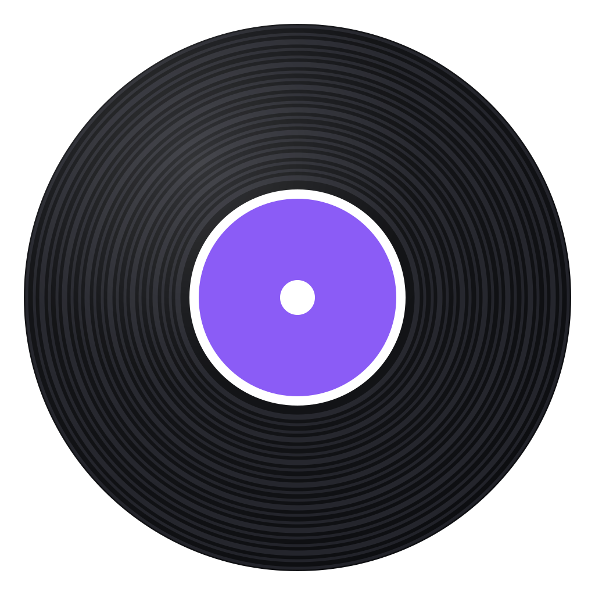

Beat Thief
Ready
Link
Take
Song
Drums
Beat
Bass
Harmony
Vocals
All four stems rebuild the song.
···
Paste a link to get started.
Steal it
Files
Nothing yet this session.
Steal a beat
Click where the phrase starts, press play, then hit space at its end.
Play
Mark the end
Close
0:00
Open